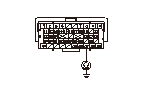

A.C.G.FR端子信号故障診断
A.C.G.FR端子信号の確認
1-1
エンジンを始動し、アイドリング状態にする
1-2
データ リスト内のA.C.ジェネレータをHDSで確認する
1-3
ヘッドライト スイッチをONにする
◆ A.C.ジェネレータの数値が変化したか
YES
-
A.C.G.FR端子信号正常
NO
-
ステップ
2
へ進む
ECUとA.C.G.FR端子間（ALTFライン）の短絡点検
2-1
イグニッション スイッチをOFFにする
2-2
HDSでSCSモードのSCSショートを実行する
2-3
ECUカプラB（49P）を外す
2-4
ECUカプラB（49P）のNo.47端子とボディ アース間の導通を確認する
◆ 導通があるか
YES
-
ECU（B47端子）とA.C.G.間コードの短絡
NO
-
•
A.C.G.の診断を行う
•
ECUのプログラムが最新でない場合は、
最新のプログラムにアップデート
し、再診断する
既にプログラムが最新であった場合は、
新品ECUに交換
し、再診断する
